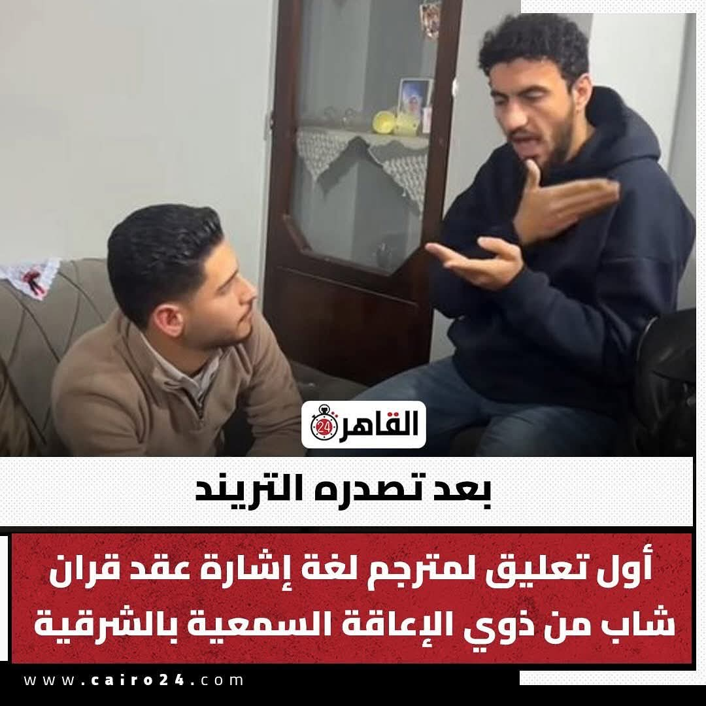
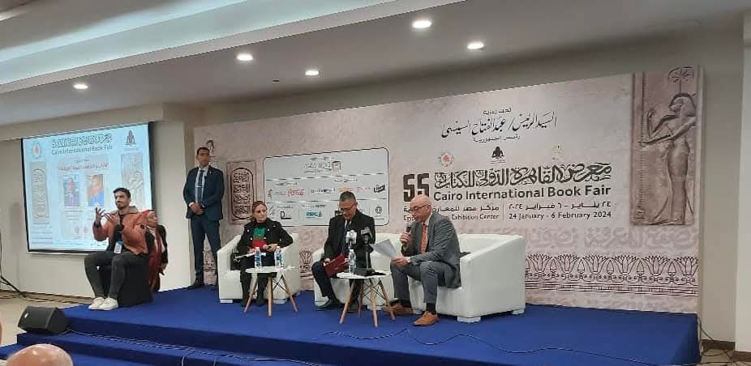
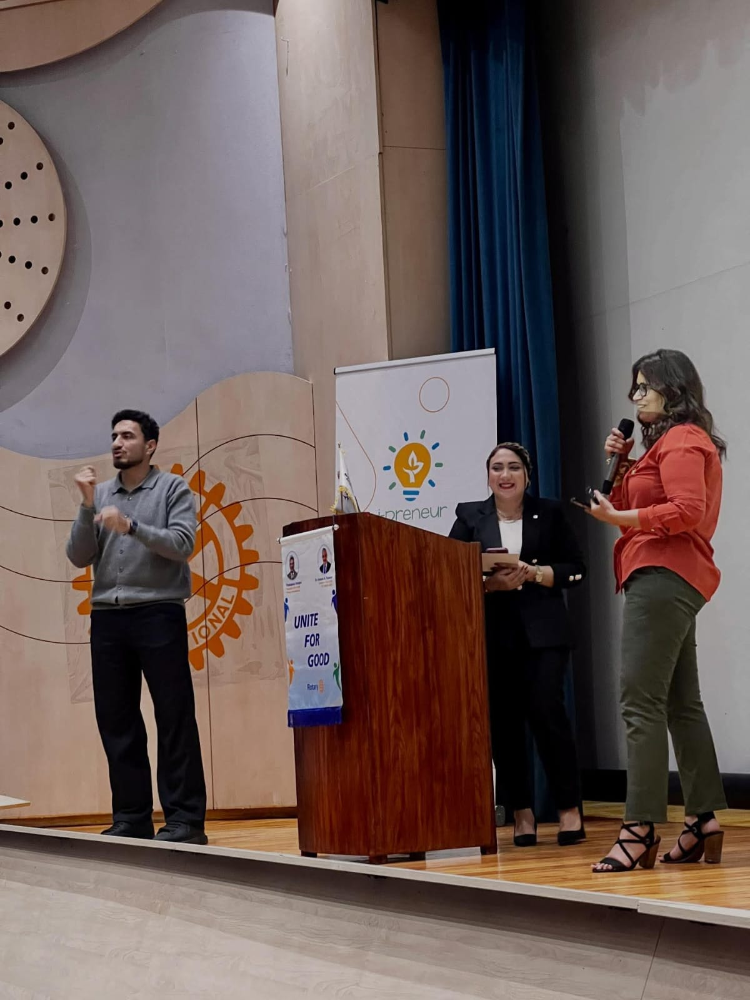
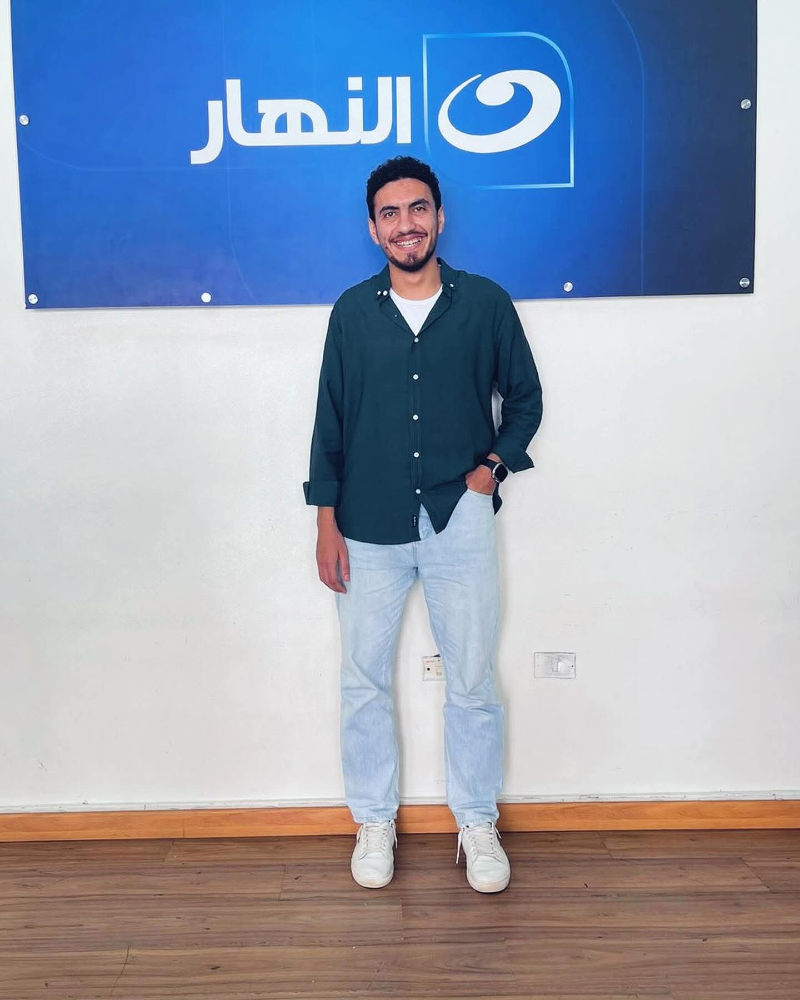
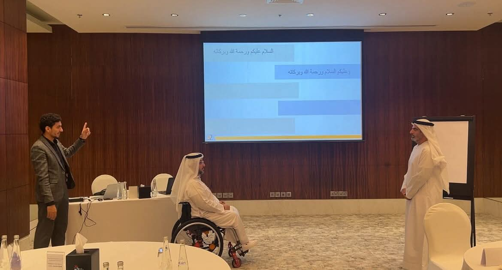
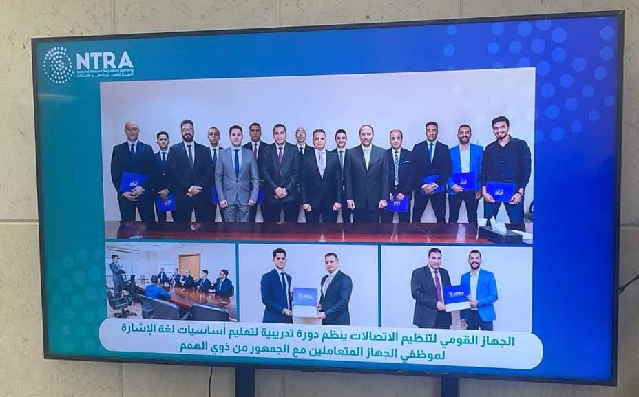
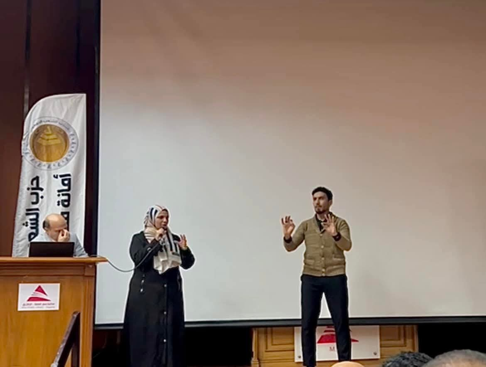
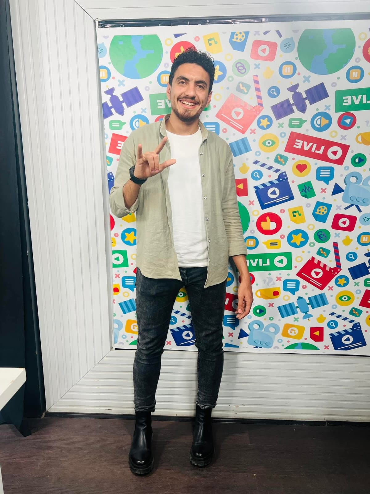

مترجم لغة الإشارة المصرية — خبرة منذ 2017 — معتمد محلياً ودولياً — المترجم المسؤول بجمعية الصم بالشرقية
من أنا
محمد شحاته مترجم لغة إشارة مصرية معتمد، بدأ مسيرته المهنية منذ عام 2017. يشغل منصب المترجم المسؤول داخل جمعية الصم بالشرقية، وحصل على اعتماد من جمعيات داخل مصر وخارجها.
شارك في فعاليات متنوعة على أعلى المستويات: مؤتمرات، معارض دولية، برامج تلفزيونية، جلسات سياسية، وورش تدريبية — ليصبح أحد أبرز وجوه الترجمة بلغة الإشارة في مصر.
الفعاليات والمشاريع

أول تعليق لمترجم لغة إشارة على عقد قران شاب من ذوي الإعاقة السمعية بالشرقية — تصدّر التريند على مستوى مصر

ترجمة إشارية رسمية في أحد أبرز الفعاليات الثقافية بالعالم العربي — يناير–فبراير 2024

ترجمة إشارية على المسرح الرئيسي لمؤتمر روتاري الدولي تحت شعار «اتحاد من أجل الخير»

ضيف وحضور إعلامي على قناة النهار، إحدى كبرى القنوات التلفزيونية المصرية

ترجمة إشارية في ورشة عمل تدريبية بالإمارات، ضمن توسيع نطاق عمله على المستوى الدولي

دورة تدريبية لتعليم أساسيات لغة الإشارة لموظفي الجهاز المتعاملين مع ذوي الهمم

ترجمة إشارية رسمية على خشبة المسرح في فعالية حزبية سياسية رسمية

حضور في استوديو إعلام رقمي لنشر الوعي بلغة الإشارة ودور المترجمين عبر المنصات الإلكترونية
الكفاءات
تواصل معي
سواء كانت فعالية، مؤتمر، برنامج تلفزيوني، دورة تدريبية، أو أي تعاون آخر — محمد شحاته جاهز لإيصال الرسالة لكل إنسان بغض النظر عن إعاقته السمعية.